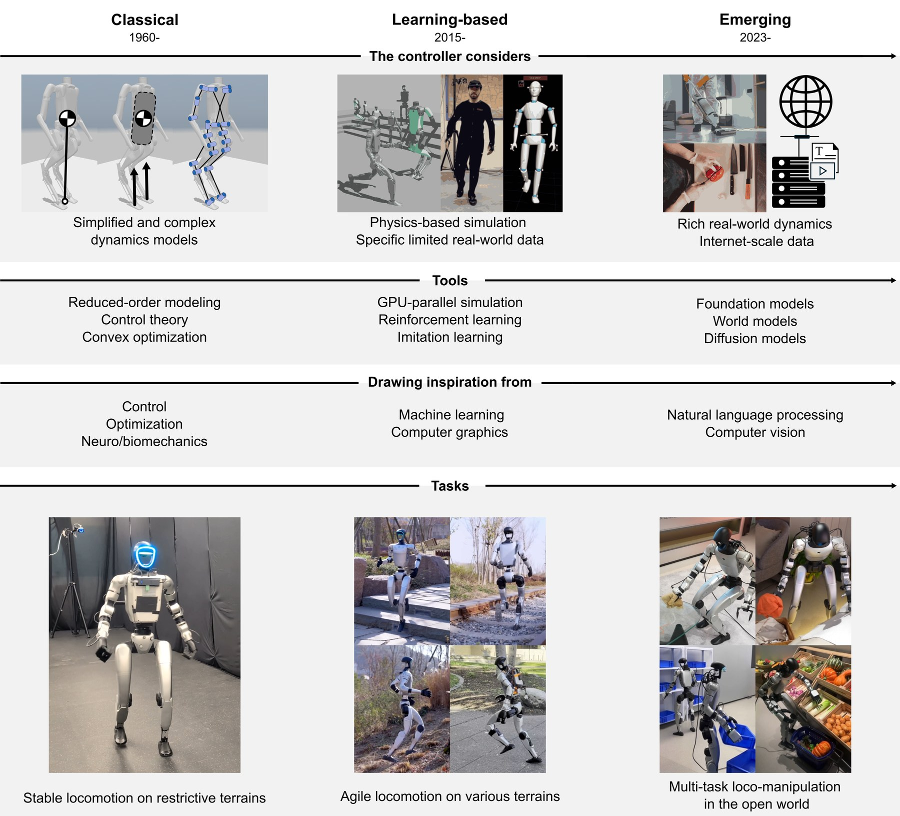
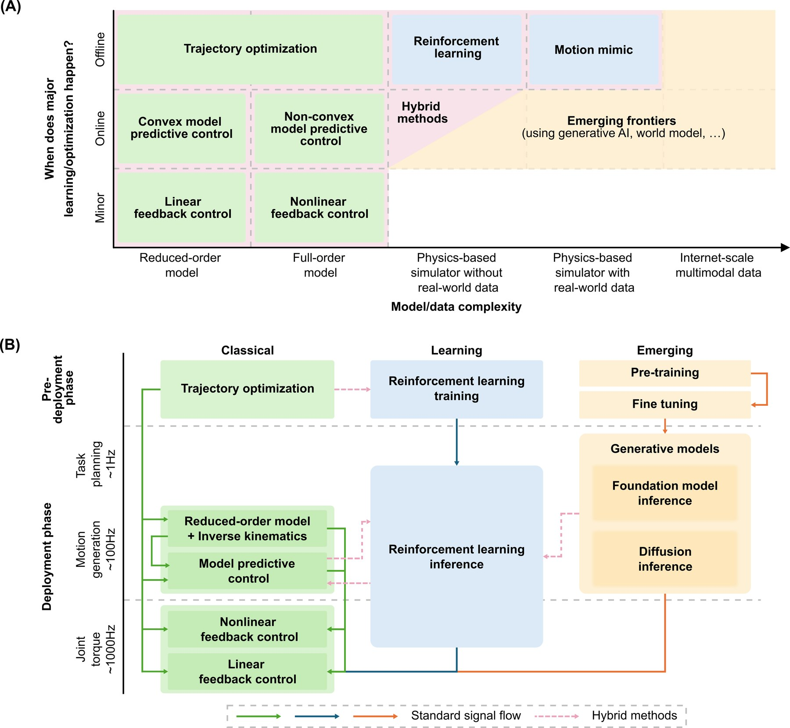
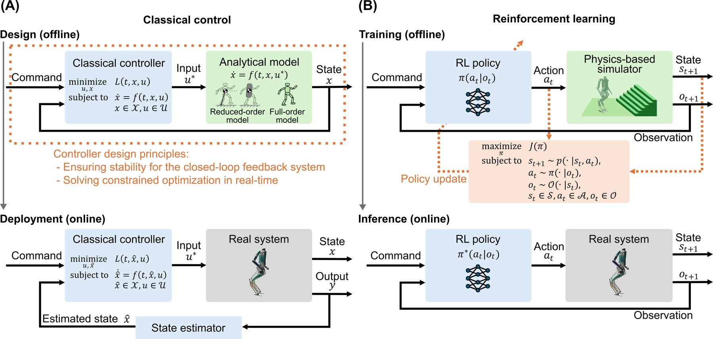
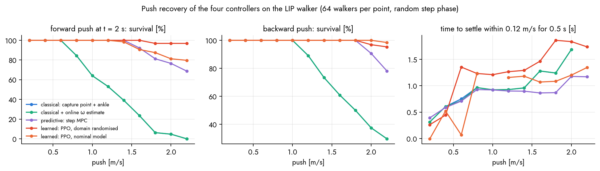
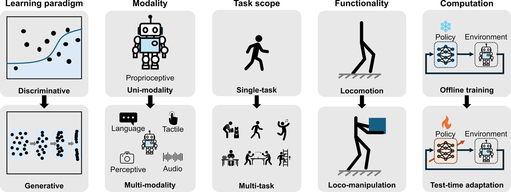
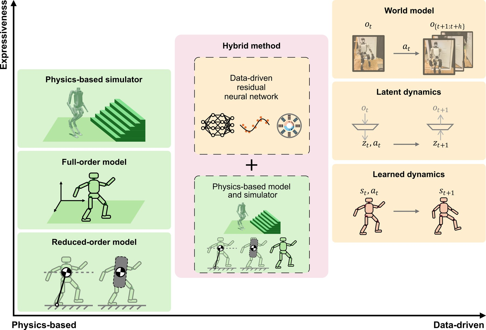

Humanoids ◆ Locomotion control ◆ Survey ◆ Science Robotics 2026 ◆ A personal illustration, not the official site
Sixty years of making two-legged machines stay up, in three eras: classical feedback and predictive control on physics models, reinforcement learning in massively parallel simulation, and the generative models now arriving. This page is my own illustration of the survey I co-authored: the eras on an interactive timeline, the unified view that ties them together, and a balance lab where a 1980s capture-point controller, a 2010s step MPC and a 2020s PPO policy take the same shoves, so the survey's argument can be pushed with a finger.
This is a personal page by one of the paper's authors, made to illustrate the survey; it is not endorsed by the co-authors, Purdue's TRACE lab, or Science Robotics. The paper is at doi:10.1126/scirobotics.aed3973 and the official companion material (figures, the curated reading list) at github.com/purdue-tracelab/Humanoid-Locomotion-Survey. The balance lab, its videos and its numbers are mine and are not part of the paper.
Teaser (15 s): the three eras on a timeline, then four controllers of three eras taking the same shoves on a planar walker. The 75-second explainer is further down.
The survey's first move is to name the eras by what the controller is allowed to consider and which tools it borrows (Fig. 1, Table 1). Each era widened the scope of reasoning, from reduced-order models to simulated and then real-world physics, and each borrowed from a new field.

Hover or tap a milestone for what it did and where the survey cites it. The axis is stretched after 2013 because that is where most of the story now happens. Dates are first public appearances; the labels are mine, the reference numbers are the paper's.
The survey's Fig. 3 sorts every paradigm by two questions: when does the optimisation or learning happen (hardly at all, online, or offline), and on what (a reduced-order model, a full model, a simulator, or data). The diagram on the left is my animated version: pick a paradigm and watch which boxes carry the signal.
The survey's reading: this is one progression, not four camps. Physics-based modelling, constrained decision making and adaptation to uncertainty appear in every column; what changes is where the computation happens and how much of the world it is allowed to see.


| challenge | classical | learning-based | emerging |
|---|---|---|---|
| stabilising unstable dynamics | analytical models and stabilising controllers | physics simulators and learned controllers | world models for dynamics, planning and control |
| high dimensionality | reduced-order models, hierarchical control | autoencoders and latent spaces, latent dynamics | diffusion policies, vision-language-action models |
| robustness to uncertainty | robust control, adaptive control | domain randomisation, teacher–student and adaptation modules | in-context learning, test-time adaptation |
| hybrid contact dynamics | hybrid system models, contact schedules | contact solved numerically in the simulator | contact represented implicitly by learned predictive models |
| structure and reuse | cascaded, hierarchical control | hierarchical policies, motion primitives | System 2 planners over System 1 trackers |
After the survey's Table 2, paraphrased: each era answers the same challenges with its own tools, and the newer tools are recognisably the older ideas. Domain randomisation is robust control; adaptation modules are adaptive control; attention is gain scheduling; a diffusion model's denoising is stochastic optimal control.
To make the eras tangible I built the smallest walker that still has the problem: a linear inverted pendulum (the survey's ref. 45) with a point foot, an ankle that can move the zero-moment point by ±5 cm, and a step to a new foot location every 0.24 to 0.60 s. It is pushed, its velocity sensor is noisy and late, and its true centre-of-mass height may not be what the controller believes. Four controllers close the loop, one per paradigm. Everything runs in your browser at 100 Hz; the learned policy is the exact network trained offline.

Arrow keys or the buttons push every walker at once. Lower the true centre of mass while the controllers still believe 0.8 m; add noise and delay to the velocity sensor; ask for another speed. ▼ is the zero-moment point the ankle produces, ◆ the capture point, | the planned foot.
Five shared pushes, absorbed with the ankle and one step each to the capture point. At a fixed 0.4 s period a 1.4 m/s shove is a coin flip (39 % survival in the sweep); this one it wins.
The same pushes: the step comes early and long when the horizon sees the limit; the velocity error is traded against step effort.
The policy never saw these exact pushes; it learned ankle, step and timing as one decision from twelve million simulated ticks, and takes fewer, longer steps than the model-based laws.
Classical, predictive, learned with randomisation, learned on the nominal model only. This time all four stand; the sweeps below give the odds, and for the classical law the 1.4 m/s shove is a 39 % chance.
The centre of mass is 0.6 m while the model says 0.8 m. The classical laws use the wrong frequency and still stand; the learned policies infer the body from their velocity history. The one fall is the randomised policy at the last 1.4 m/s shove: on a short body that shove is at the edge for everyone.
Survival against a forward push at 2 s, 64 walkers per point with random step phase, 0.03 m/s velocity noise and 10 ms delay. Hover for values. The classical and the adaptive curves coincide.
Backward push. Stepping backwards against a forward commanded velocity is harder for everyone.
Model mismatch. Random pushes of up to 1 m/s at 0.6 per second while the true CoM height varies from 0.5 to 1.1 m; every controller assumes 0.8 m. The classical law falls in about a quarter of the episodes whatever the body, the predictive one never, the randomised policy in 0–2 %, the nominal-only policy in 6 % at 0.6 m and 11 % at 0.5 m.
Sensor noise. Falls in 10 s against the noise on the measured velocity, 10 ms delay. At σ = 0.4 m/s the classical law falls 84 % of the time, the step MPC 12 %, both learned policies 0 %: a policy with a velocity history in its observation filters, a law reacts to every sample.
Velocity tracking under gentle pushes across commanded speeds, including walking backwards.
Recovery time after a forward push: how long until the velocity is back within 0.12 m/s of the command for half a second.
One episode, five shared pushes (the race above): CoM velocity of each controller.
The same episode on the 0.6 m body.
PPO training of the two policies: reward per second of walking against iterations of 512 walkers × 48 ticks.
Falls per second during training. Both policies are the better of two seeds; the first seed of the nominal-only policy ended at 0.05 falls per second and fell in 41 % of the 0.6 m episodes, the second at 0.004 and 6 %. The seed mattered more than the training distribution.
Its capture-point stepping is right, but at a fixed period and with a step it clips instead of planning around. Estimating ω online changes nothing measurable (23 % falls under random pushes either way); choosing when to step takes the predictive controller to 0 %.
Both step early and long. One reasons on the step-to-step model at run time; the other encoded millions of such solutions into 64×64 weights offline: the survey's optimal-control view of RL (Eq. 2 against Eq. 3).
The randomised policy survives 97 % of 2.2 m/s shoves against 80 % for the nominal-only one, and falls in 2 % of episodes on a 0.5 m body against 11 %. But a well-trained nominal-only policy also stands on the wrong body: with a velocity history in its observation it adapts implicitly, the survey's teacher–student point. A first seed of that policy fell 41 % of the time on the 0.6 m body; two seeds of one algorithm differed more than two training distributions. The survey calls RL algorithmically fragile; this is what that looks like. The price of learning here: velocity tracking of 0.15–0.23 m/s against 0.11 for the model-based laws.
The emerging era is not one method but a direction of travel. The survey names five shifts (Fig. 5) and, for each, the connection to a classical idea.
Policies that model a distribution over feasible actions or trajectories, so multi-modal choices (step left or right) and inference-time conditioning become possible. Denoising is stochastic optimal control.
Proprioception alone is blind; vision, depth, tactile and language enter through fusion architectures and vision-language-action models, doubling success on terrain-aware tasks.
Shared representations, skill libraries, cross-embodiment data and behaviour foundation models replace one policy per task with its own rewards.
Walking and handling in one whole-body policy: co-tracking human–object interaction, hierarchical planners over trackers, force-adaptive control.
Adjust online to what training never showed: in-context learning as adaptive control, standardised tests for falls and recovery.


What the survey asks of the next decade. Safer and more reliable humanoids first: falling is the barrier to deployment, and the paper calls for standardised recovery and impact tests, compliant and energy-dissipating hardware, and test-time adaptation. Then accessible platforms, since costs have already dropped by an order of magnitude; then the integration of control with perceptual and cognitive intelligence in a two-level hierarchy, a reactive motor layer under a deliberative one; and, further out, an ecosystem of networked embodied agents.
The conclusion the authors draw is the one the balance lab tries to make physical: the recent leap in agility is not the triumph of neural policies alone but of contact-rich simulation, expressive architectures, physics-guided training design and asymmetric training together. Physics did not get replaced; it moved into the simulator, the reward, the curriculum and the real-time interface.
Open-source platforms (Berkeley Humanoid, Berkeley Humanoid Lite, Stanford ToddlerBot) maximise flexibility; commercial ones (Unitree G1 and H1, Booster T1 and K1, Agility Digit, Apptronik Apollo) maximise productivity with safety-tested hardware and vendor support.
Model-based: MIT Cheetah software, OpenLoong, CasADi, Acados, OCS2, Judo. Learning-based: Isaac Lab, MuJoCo Playground, MJLab, and Newton and Genesis for large-scale differentiable simulation. Data: AMASS and pipelines like BeyondMimic.
Feedback Control of Dynamic Bipedal Robot Locomotion and Robot Modeling and Control for the classical half; Reinforcement Learning: An Introduction and PPO for decision making; DreamerV3 for world models; Deep Learning, VAEs and the principles of diffusion for the generative foundations.
install Isaac Sim and Isaac Lab
execute a walking policy in simulation
train balancing and walking controllers
condition on a commanded velocity
track human motion
learn perceptive locomotion on rough terrain
deploy the learned policies on hardware
From the official repository, which organises the papers the survey cites; the sections still being filled in there are omitted here. Follow the repository for the complete, maintained list.
Seventy-five seconds: the three eras, the timeline, the unified view, the balance lab and its races, the push sweeps, the three principles and the five shifts.
The lab is one small Python package (the vectorised LIP world, the four controllers, rollouts and the push-recovery protocol), a PPO trainer in PyTorch, a study script, and the figure and video scripts. Everything is seeded; the two policies train in about twenty minutes on a laptop CPU. The browser lab is a line-for-line port with the exported weights.
# Locomotion/experiments python -m pytest -q tests # exact LIP map, periodic gait fixed point, MPC limits, adaptive estimator python train_rl.py --name dr # PPO with domain randomisation -> out/policy_dr.json python train_rl.py --name nodr # PPO on the nominal body only python run_study.py # push / mismatch / noise / velocity sweeps + traced episodes -> out/study.json python make_figures.py # docs/figures/*.pdf, site PNGs, assets/data/locomotion_results.json, docs/numbers.tex python make_videos.py --which all # lab clips, races, timeline, teaser, explainer, thumb cd ../docs && make # locomotion_lab.pdf
Files. lipwalk/model.py (LIPWorld, exact integration, pushes, noise, delay, randomisation), lipwalk/controllers.py (ClassicalDCM, AdaptiveDCM, StepMPC, MLPPolicy), lipwalk/sim.py (rollout, push_recovery), train_rl.py. On the site: assets/js/locomotion_lab.js, locomotion_timeline.js, locomotion_plots.js, the policies in assets/data/locomotion_policy_*.json.
What the lab is not. A planar point-foot pendulum with instantaneous steps is the survey's reduced-order model, not a humanoid: no swing-leg dynamics, no torque limits, no terrain, no perception. It shows the mechanism of each era's controller under the same disturbance, not their performance on a robot. The report has the equations, the training details, every number and the limitations.
Evolution of Humanoid Locomotion Control. Yan Gu*, Guanya Shi*, Fan Shi*, I-Chia Chang, Yen-Jen Wang, Qilong Cheng, Zachary Olkin, Ivan Lopez-Sanchez, Yunchu Feng, Jian Zhang, Aaron D. Ames, Hao Su†, Koushil Sreenath† (* equal contribution, † corresponding). Science Robotics 11(117), eaed3973, 2026. doi:10.1126/scirobotics.aed3973.
Figures 1 to 5 are the paper's, taken from the companion repository; the era descriptions, Table 2 paraphrase and getting-started notes follow the paper's text. The timeline, the animated unified view, the balance lab, its policies, videos, plots and report are mine and are not part of the paper. This page is a personal illustration and not the official site of the survey.